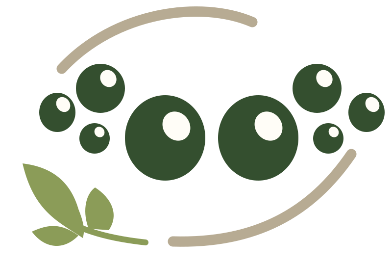
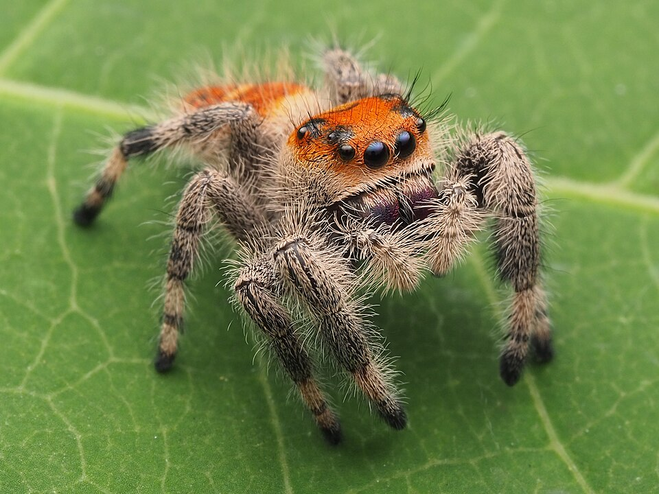
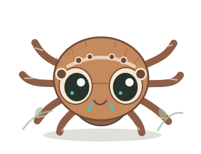

BREEDING JOURNAL準備中
繁殖日記
記下配對、孵化和幼蛛成長。
尚無紀錄
有了紀錄，會在這裡分享。

八目 HACHIME跳蛛研造 ／ JUMPING SPIDER LAB
飼養前的準備與接回後的照顧。
配對、卵囊、孵化與幼蛛成長的紀錄。
RECENT NOTES
關於八目和正在做的事。
社群與聯絡
關於八目 ↗從飼養前的準備，到帶回家後的日常照顧。
環境、餵食、脫皮，以及照顧跳蛛時會遇到的問題。
八目 HACHIME，記錄跳蛛的飼養與日常觀察，也正在設計自己的飼養盒。
A1 飼養盒還在設計中，尚未開放販售。
手寫字體：LXGW WenKai TC（SIL OFL 1.1）。
筆記插圖使用 OpenMoji（CC BY-SA 4.0）；跳蛛照片來自 Wikimedia Commons，依各張照片授權使用；A1 飼養盒仍是設計示意。完整來源見 素材授權。
HACHIME SHOP
活體與用品準備中，尚未開放販售。
還在準備？先看環境準備清單 →
佛跳、老虎狗與獅子狗。
目前尚未開放販售或預訂。照片與插圖僅供參考，並非在售個體。

獅子狗插圖： OpenMoji · CC BY-SA 4.0 · 原圖未修改，非物種外觀。
目前規劃四種尺寸、三種款式，還沒有實體樣品。
價格為預估，購物車僅供試用，不會成立訂單或付款。
A1 還在設計階段，尚未製作樣品。這裡記下目前的構想。
開盒餵食時少一些干擾，清潔時更好操作，是我們想解決的問題。
目前規劃四種尺寸，以及 CORE、PLUS、PRO 三種款式。
有了樣品，會在這裡分享照片和試用紀錄。